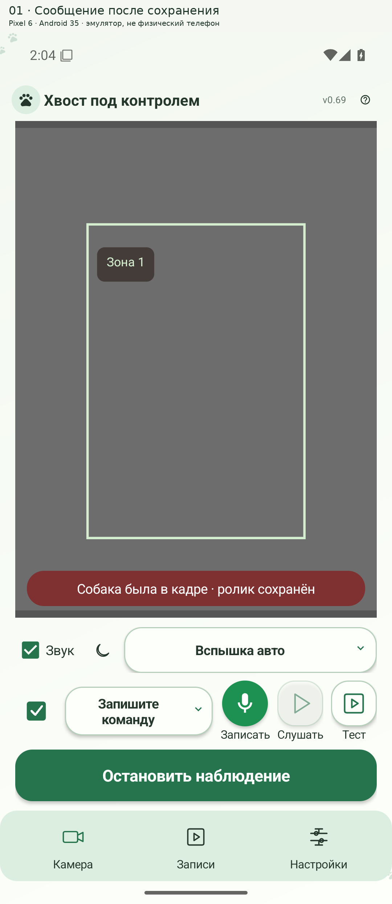
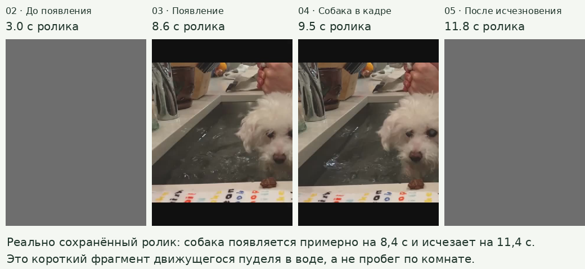

Настоящий Android-эмулятор Pixel 6/API 35. Отмечена только категория «Собаки».
Модель подтвердила собаку с задержкой 13,571 с. Приложение сохранило короткое событие, хотя собака уже исчезла из текущего изображения. Движение фотографии человека не создало новый ролик.
Проверка частичная: в ролике 8,4 с до появления, а не ровно 5 с. Физический телефон не проверен. Использован трёхсекундный фрагмент настоящего видео движущегося пуделя в воде — это не пробег по комнате.
Скачать неизменённый ролик 42 с · Журнал времени кадра, распознавания и сохранения · Данные проверки
Собака появляется примерно на 8,4 с и исчезает на 11,4 с. Вся короткая сцена сохранена. После неё — пустой кадр.


Источник пуделя: Rhododendrites, Wikimedia Commons, CC BY-SA 4.0. Изменения: короткий фрагмент, масштабирование, запись камерой эмулятора. Атрибуция и лицензия.
Полный прогон в частном QA-репозитории · Вернуться к проверкам версии